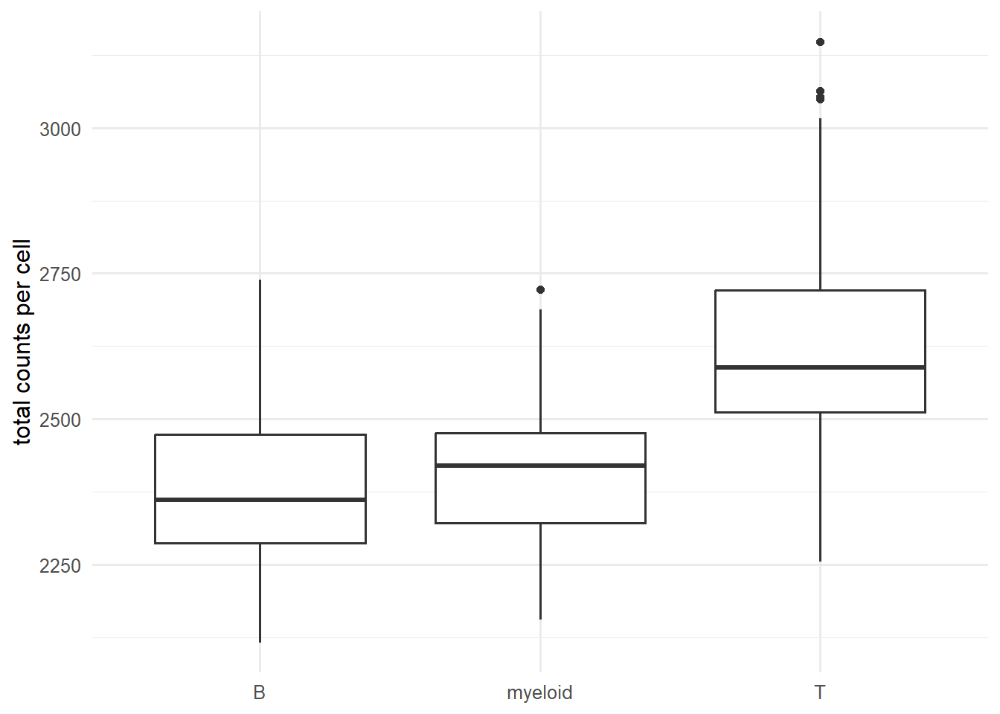
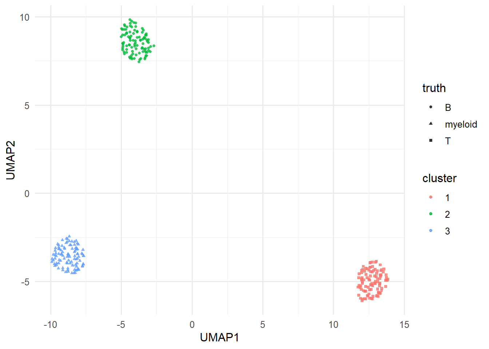

library(tidyverse)
library(uwot)
set.seed(42)
theme_set(theme_minimal(base_size = 12))Week 4, Session 3 — scRNA-seq with Seurat
Course 4 — #courses
Note
Workflow labs use the variant template: Goal → Approach → Execution → Check → Report.
Learning objectives
- Walk through the Seurat pipeline: QC, normalisation, feature selection, PCA, neighbour graph, clustering, UMAP.
- Describe why scRNA-seq counts need different handling from bulk counts.
- Produce a small analogous pipeline in base R with simulated cells and the
uwotUMAP.
Prerequisites
UMAP from Week 1 Session 5; RNA-seq from Session 1.
Background
Single-cell RNA-seq measures gene expression in thousands of cells simultaneously, producing a sparse, noisy, zero-inflated matrix. Clustering and cell-type annotation are exploratory steps that require a chain of careful preprocessing: drop empty droplets, normalise library size, select variable genes, reduce to principal components, build a nearest-neighbour graph, cluster on the graph, embed with UMAP.
Seurat is the dominant R toolkit for this pipeline. Every step has alternatives — SCTransform vs NormalizeData, Louvain vs Leiden clustering, Harmony for batch correction — and each choice changes the resulting partition. The good reflex is to run the same pipeline twice with a perturbed parameter and check that the biology survives.
Seurat is not on CRAN and its installation is non-trivial in a rendering environment. We sketch the pipeline with #| eval: false and run an analogous, tiny base-R + uwot pipeline on a simulated cell × gene matrix so the reasoning is visible in every render.
Setup
1. Goal
Walk through an scRNA-seq analysis conceptually with a small simulated cell × gene matrix, ending at a 2-D embedding with cluster labels.
2. Approach
300 cells, 500 genes, three cell types with partly overlapping expression programmes.
n_cell <- 300; n_gene <- 500
cell_type <- rep(c("T", "B", "myeloid"), each = n_cell / 3)
mu_base <- exp(rnorm(n_gene, 1, 1))
X <- matrix(0, n_cell, n_gene)
for (i in seq_len(n_cell)) {
program <- rep(1, n_gene)
if (cell_type[i] == "T") program[1:20] <- 5
if (cell_type[i] == "B") program[21:40] <- 5
if (cell_type[i] == "myeloid") program[41:60] <- 5
X[i, ] <- rnbinom(n_gene, mu = mu_base * program, size = 2)
}
tibble(lib = rowSums(X), ct = cell_type) |>
ggplot(aes(ct, lib)) + geom_boxplot() +
labs(x = NULL, y = "total counts per cell")
3. Execution
Log-normalise, select variable genes, PCA, UMAP, cluster.
logX <- log1p(sweep(X, 1, rowSums(X), FUN = "/") * 1e4)
gene_var <- apply(logX, 2, var)
keep <- order(gene_var, decreasing = TRUE)[1:100]
pcs <- prcomp(logX[, keep])$x[, 1:10]
emb <- umap(pcs, n_neighbors = 20, min_dist = 0.1)
# A simple k-means cluster on the PCs as a stand-in.
km <- kmeans(pcs, centers = 3, nstart = 10)
tibble(x = emb[, 1], y = emb[, 2],
cluster = factor(km$cluster), truth = cell_type) |>
ggplot(aes(x, y, colour = cluster, shape = truth)) +
geom_point(alpha = 0.8, size = 1) +
labs(x = "UMAP1", y = "UMAP2")
A Seurat call pattern (not run).
library(Seurat)
obj <- CreateSeuratObject(counts = t(X))
obj <- NormalizeData(obj)
obj <- FindVariableFeatures(obj, nfeatures = 100)
obj <- ScaleData(obj)
obj <- RunPCA(obj, npcs = 10)
obj <- FindNeighbors(obj, dims = 1:10)
obj <- FindClusters(obj, resolution = 0.5)
obj <- RunUMAP(obj, dims = 1:10)
DimPlot(obj, label = TRUE)4. Check
Contingency of cluster vs true cell type.
table(cluster = km$cluster, truth = cell_type) truth
cluster B myeloid T
1 0 0 100
2 100 0 0
3 0 100 05. Report
On a simulated 300-cell × 500-gene dataset with three cell types, a small pipeline (log normalisation, top-100 variable genes, 10 PCs, UMAP, k-means) recovered the three types with high agreement. The same reasoning — preprocess, reduce, graph, cluster, embed — underlies the Seurat pipeline sketched in the accompanying code.
On a real dataset the critical choices are the normalisation (SCTransform vs NormalizeData), the number of PCs (elbow or JackStraw), and the clustering resolution. Perturb each and confirm that the biological conclusions do not.
Mention that Harmony or scVI are the usual choices for batch integration; clustering on uncorrected data across batches is a classic mistake.
Common pitfalls
- Clustering before QC; apoptotic cells and empty droplets cluster together.
- Forgetting that UMAP distances are not biological distances.
- Using marker genes from a tutorial on a different tissue for cell-type annotation.
Further reading
- Stuart T et al. (2019), Comprehensive integration of single-cell data.
- Luecken MD, Theis FJ (2019), Current best practices in single-cell RNA-seq analysis: a tutorial.
Session info
sessionInfo()R version 4.5.2 (2025-10-31 ucrt)
Platform: x86_64-w64-mingw32/x64
Running under: Windows 11 x64 (build 26200)
Matrix products: default
LAPACK version 3.12.1
locale:
[1] LC_COLLATE=English_Germany.utf8 LC_CTYPE=English_Germany.utf8
[3] LC_MONETARY=English_Germany.utf8 LC_NUMERIC=C
[5] LC_TIME=English_Germany.utf8
time zone: Europe/Berlin
tzcode source: internal
attached base packages:
[1] stats graphics grDevices utils datasets methods base
other attached packages:
[1] uwot_0.2.4 Matrix_1.7-5 lubridate_1.9.5 forcats_1.0.1
[5] stringr_1.6.0 dplyr_1.2.1 purrr_1.2.2 readr_2.2.0
[9] tidyr_1.3.2 tibble_3.3.1 ggplot2_4.0.3 tidyverse_2.0.0
loaded via a namespace (and not attached):
[1] gtable_0.3.6 jsonlite_2.0.0 compiler_4.5.2 Rcpp_1.1.1-1.1
[5] tidyselect_1.2.1 FNN_1.1.4.1 scales_1.4.0 yaml_2.3.12
[9] fastmap_1.2.0 lattice_0.22-9 R6_2.6.1 labeling_0.4.3
[13] generics_0.1.4 knitr_1.51 htmlwidgets_1.6.4 pillar_1.11.1
[17] RColorBrewer_1.1-3 tzdb_0.5.0 rlang_1.2.0 stringi_1.8.7
[21] xfun_0.57 S7_0.2.2 otel_0.2.0 timechange_0.4.0
[25] cli_3.6.6 withr_3.0.2 magrittr_2.0.4 digest_0.6.39
[29] grid_4.5.2 hms_1.1.4 lifecycle_1.0.5 vctrs_0.7.3
[33] RSpectra_0.16-2 evaluate_1.0.5 glue_1.8.1 farver_2.1.2
[37] rmarkdown_2.31 tools_4.5.2 pkgconfig_2.0.3 htmltools_0.5.9